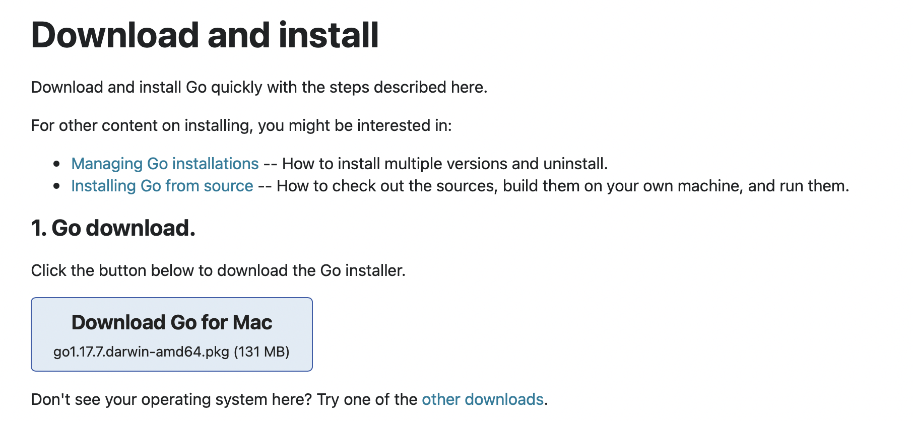
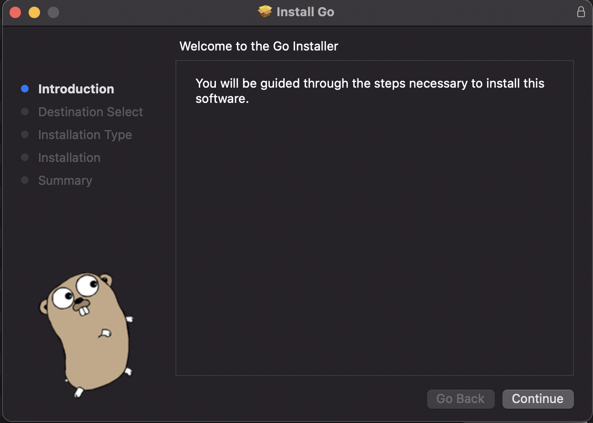
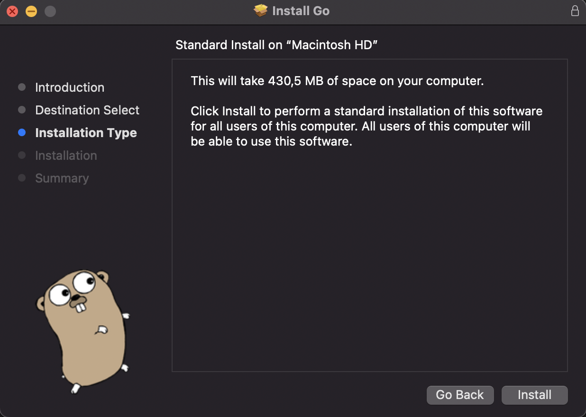
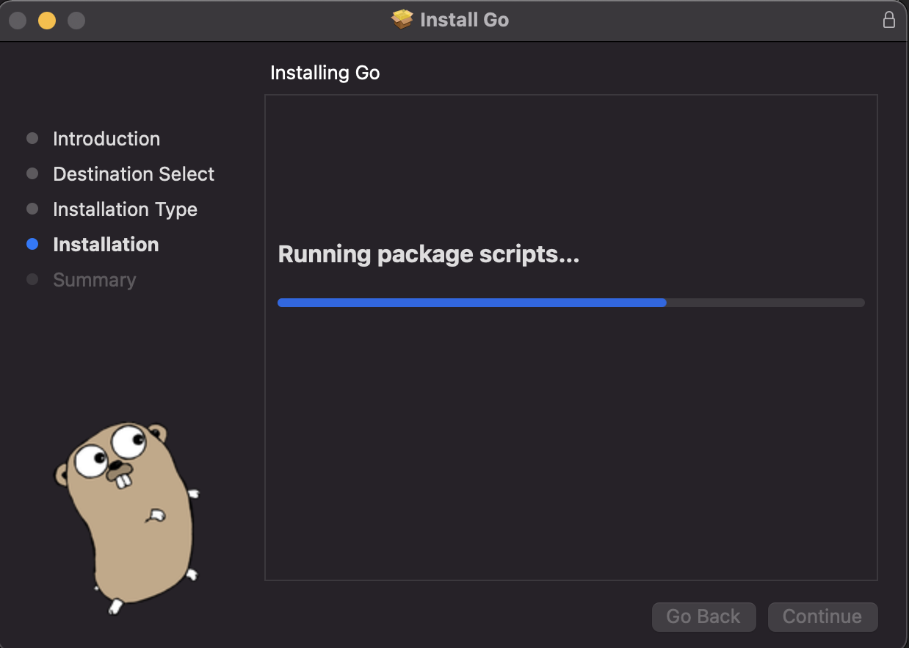
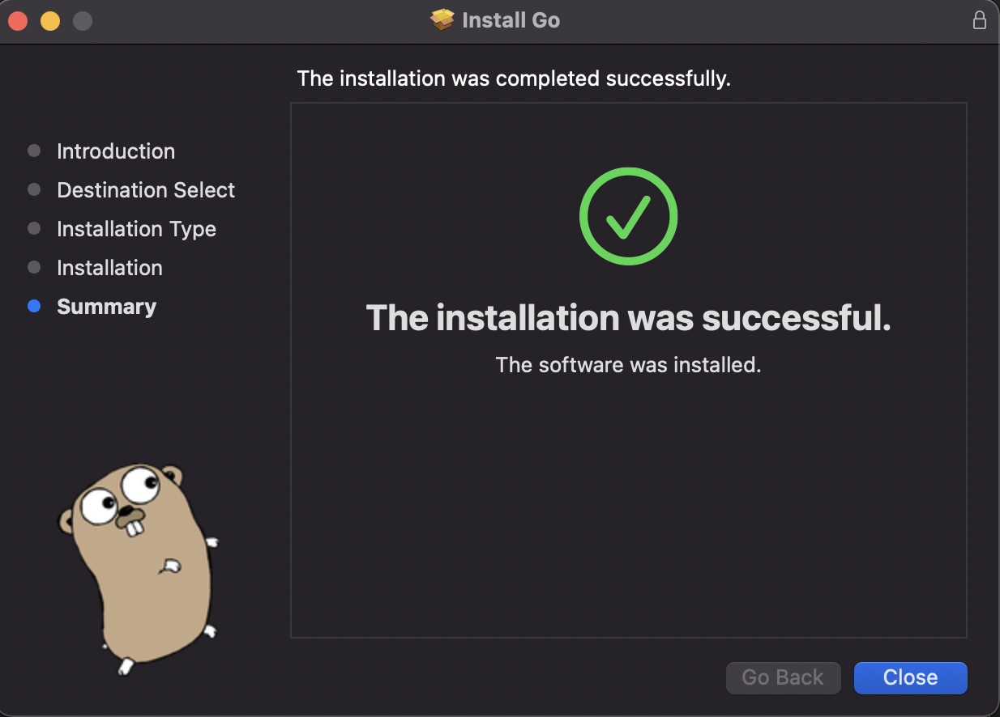
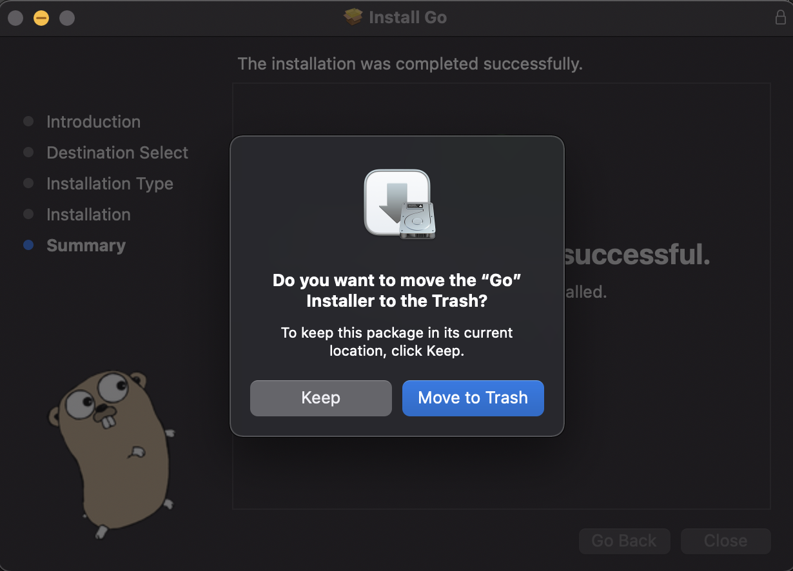
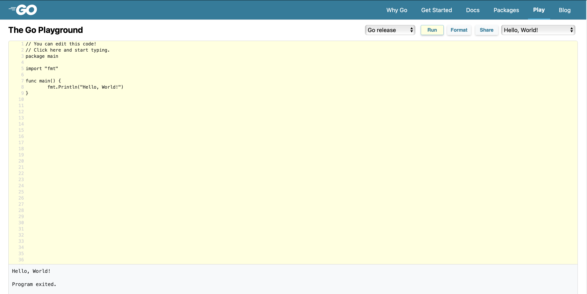

0. Getting Started with Go
Contents
0. Getting Started with Go¶
1. Installation¶
In this tutorial, I will demonstrate the process to install Go in MacOS (which pretty much follows the Go’s official installation instructions [1]). Processes for other operating systems are similar.
1.1 Download the Go package for MacOS¶
You can visit the Downloads and install site to get a suggested package that the Go developers think suitable for your operating system. Or you can choose for yourself from an exhausted list of packages from the Downloads page. I will use the former approach.

Click on the Download Go for Mac button and wait for the download to complete.
1.2 Follow the Go Installer¶
After that, follow the installation wizard to complete the installation (I trust the Go developers so will click Next - Next - …)
On the installation prompt starter - Click Continue.

Then, click Install

Next, wait for a few minutes for the Go Installer to write some files.

Most of the time, if you (and your computer) have a good day, the installation will be successful after a few minutes. Click Close to complete the installation.

You can move the Installer to Trash to save storage space.

1.3 Verify that your system recognizes Go¶
Open your Terminal and type in the command prompt
go version
If it returns a short line of version such as the example below then congratulations, you are good to go with Go!
go version go1.17.7 darwin/amd64
If it does not work, you may need to restart your Terminal so that it recognizes the newly added go command in PATH.
2. "Hello, World!"¶
There are two ways that you can get your hands on with the “Hello, World!” program in Go.
2.1 The Go Playground¶
You can visit The Go Playground (an online web-based environment designed specifically for Go-implementation) and run the default program by clicking the Run button, it will display the “Hello, World!” program.

2.2 Run “Hello, World!” Program with an IDE¶
In this tutorial, I will instruct you to use Go with Visual Studio Code (VSCode). This is a matter of interest, you can write the program in whatever IDE you prefer.
First, to have the best experience with the language in VSCode, you should install Go-extension for VSCode. Go to Extentions > Go (choose this version developed by the Go’s developer team at Google). If you install correctly, the following file will have color marker for Go keywords as below.
Create a file named hello.go with the code below.
Note: You can find the sample code of this book in the code folder, followed by chapter name.
package main
import "fmt"
func main() {
fmt.Println("Hello, World!")
}
To execute this file, go to Terminal and move to the folder that contains the hello.go file (if you are not familiar with Terminal, it means type in cd folder/folder/.../folder, replace the folder with your directory). Then, run go run hello.go
# example in my laptop
cd Desktop/Panda1835/Go-for-Beginner/code/00-getting-started
go run hello.go
>>> Hello, World!
If you receive the “Hello, World!” then Voila!, you have successfully run your very first program in Go!
3. Uninstall Go¶
The uninstallation is followed from the Go’s official documentation [2].
Delete the go directory:
sudo rm -rf /usr/local/go
Remove the Go bin directory from your PATH environment variable.
sudo rm /etc/paths.d/go
4. More resources to learn Go¶
I suggest several resources here to learn more about Go.
Website:
Books: